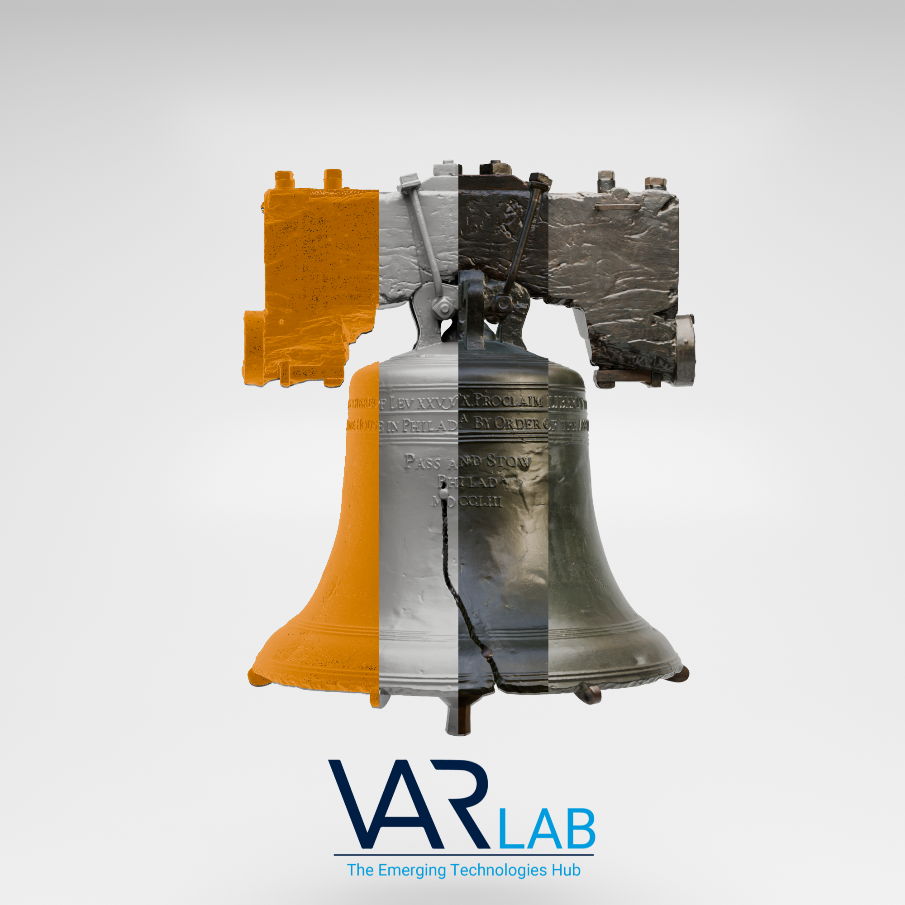
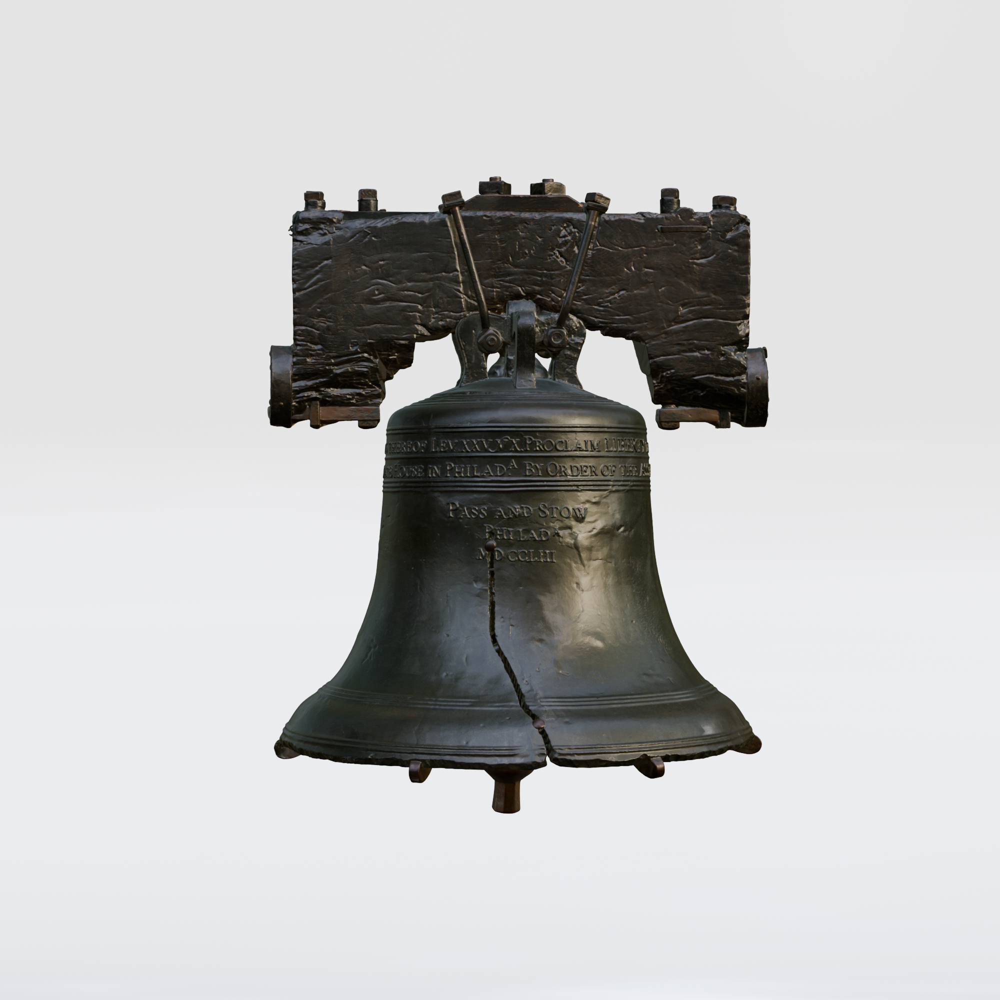
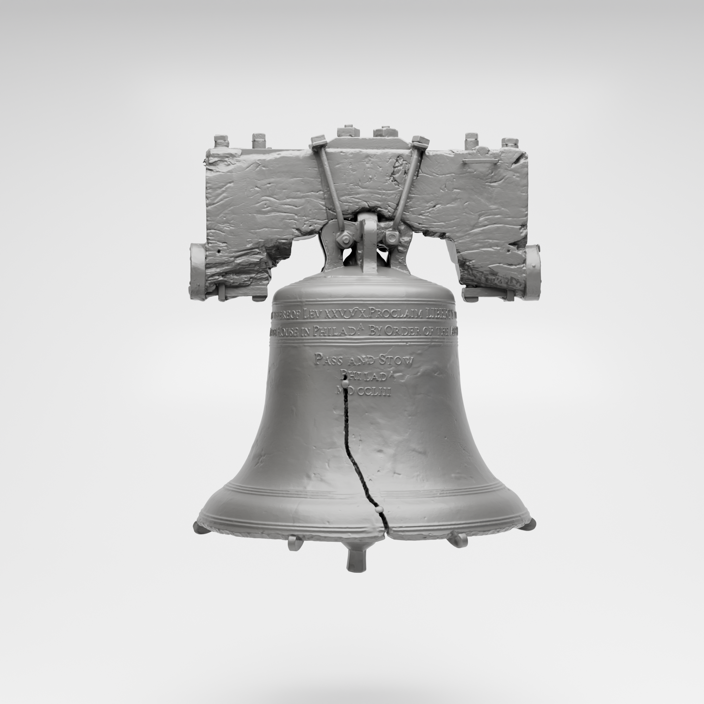
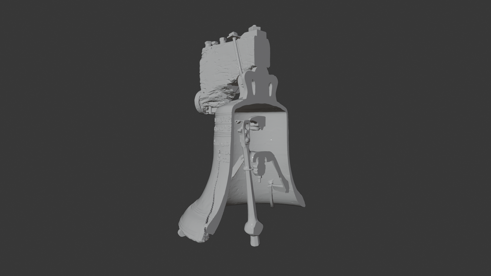
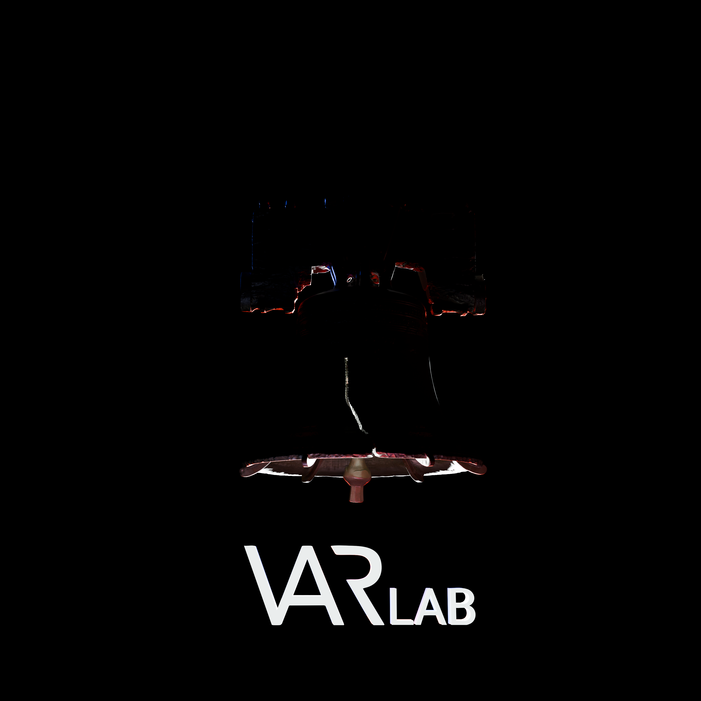

After the Liberty Bell scan was processed, I built the public-facing media around the finished model. I turned the technical scan into short videos, teaser edits, and still renders for the VAR Lab website and social posts.
I used Blender for scene setup, lighting, animation, and rendering, then moved into Adobe After Effects and Adobe Premiere Pro for compositing, editing, pacing, and final export. The stills on this page came from the same workflow and were designed to show both the finished look of the bell and parts of the process behind it.




